🌿 1. Kỳ Quan Non Nước Địa Đầu & Địa Chất Toàn Cầu UNESCO
Khác biệt với nét gai góc của cao nguyên đá Đồng Văn hay vẻ bảng lảng săn mây của Tà Xùa, non nước Cao Bằng mang một vẻ đẹp trác tuyệt, hữu tình như bức tranh thủy mặc khổng lồ. Hệ thống sông Quây Sơn, sông Bằng Giang len lỏi giữa hàng ngàn ngọn núi đá vôi hình tháp nón (cone karst) xanh mướt, kiến tạo nên những kỳ quan thiên nhiên độc nhất vô nhị như Núi Mắt Thần thủng vòm xuyên núi, động Ngườm Ngao lung linh nhũ đá thạch anh và quần thể 36 hồ nước tự nhiên Thang Hen huyền ảo.
Về địa chất, Công viên địa chất toàn cầu Non nước Cao Bằng có diện tích hơn 3.683 km², trải dài trên 9 huyện thành phố với 130 điểm di sản địa chất độc đáo. Nơi đây là bằng chứng sống động về sự tiến hóa của vỏ Trái Đất qua các thời kỳ cổ sinh, từ đại dương cổ đại đến các vận động nâng mảng kiến tạo tạo nên địa hình karst dạng tháp nón độc đáo bậc nhất hành tinh.
🏛️ 2. Vị Trí Địa Lý & Dấu Ấn Lịch Sử Cội Nguồn Cách Mạng
Cao Bằng có vị trí chiến lược đặc biệt quan trọng với hơn 333km đường biên giới tiếp giáp nước bạn Trung Quốc. Vùng đất cội nguồn này tự hào là cái nôi của cách mạng Việt Nam, gắn liền với những mốc son chói lọi trong sự nghiệp giải phóng dân tộc của Chủ tịch Hồ Chí Minh và Đại tướng Võ Nguyên Giáp.
Theo Quyết định số 548/QĐ-TTg ngày 10/5/2012 của Thủ tướng Chính phủ, Khu di tích Pác Bó (xã Trường Hà, huyện Hà Quảng) đã được xếp hạng là Di tích quốc gia đặc biệt. Nơi đây ngày 28/01/1941, sau 30 năm bôn ba tìm đường cứu nước, Lãnh tụ Nguyễn Ái Quốc đã vượt qua cột mốc 108 trở về Tổ quốc trực tiếp lãnh đạo phong trào cách mạng Việt Nam.
Bên cạnh đó, theo Quyết định số 2383/QĐ-TTg ngày 09/12/2013 của Thủ tướng Chính phủ, Khu di tích Rừng Trần Hưng Đạo (huyện Nguyên Bình) được xếp hạng là Di tích quốc gia đặc biệt — nơi thành lập Đội Việt Nam Tuyên truyền Giải phóng quân ngày 22/12/1944 (tiền thân của Quân đội Nhân dân Việt Nam anh hùng). Về danh lam thắng cảnh, Thác Bản Giốc và Động Ngườm Ngao được xếp hạng Danh lam thắng cảnh cấp Quốc gia theo Quyết định số 985-QĐ/VH ngày 20/5/1998 của Bộ Văn hóa - Thông tin.
🤝 Vận Hành Thí Điểm Khu Cảnh Quan Thác Bản Giốc (Việt Nam) - Đức Thiên (Trung Quốc)
Từ ngày 15/9/2023, theo Hiệp định hợp tác bảo vệ và khai thác tài nguyên du lịch thác Bản Giốc (Việt Nam) - Đức Thiên (Trung Quốc), hai nước chính thức đưa vào vận hành thí điểm Khu cảnh quan qua lại biên giới cho du khách hai bên, khẳng định chủ quyền biên giới quốc gia hòa bình, hữu nghị và phát triển bền vững.
📜 3. Huyền Thoại Thác Bản Giốc & Giai Thoại Non Nước Vùng Biên
✨ Chuyện tình nàng Kiều Huệ & Sự tích Thác Bản Giốc
Tương truyền thuở xưa nơi bản Giốc có nàng Kiều Huệ xinh đẹp nết na, da trắng như hoa lê và giọng hát ngọt ngào như suối ngàn. Nàng đem lòng yêu tha thiết một chàng trai nghèo trong bản. Một ngày nọ, một vị hoàng tử kiêu ngạo mang sính lễ đến ép duyên nhưng nàng một mực cự tuyệt. Bị bắt giam vào cung thất, nàng và người yêu đã cùng nhau liều chết trốn thoát trong đêm giông bão. Khi chạy đến bờ vực sông Quây Sơn, cùng đường trước quân binh truy đuổi, đôi uyên ương ôm chặt lấy nhau gieo mình xuống vực sâu. Trời đất cảm thương tình yêu chung thủy son sắt, liền làm mưa bão cuồn cuộn suốt bảy ngày đêm. Nước ngập dâng cao tạo thành dải thác trắng xóa ba tầng hùng vĩ, ngày đêm reo vang bản tình ca bất diệt của tình yêu đôi lứa thủy chung.
✨ Sự tích Động Ngườm Ngao — Hang Hổ & Tiếng gầm thạch nhũ
Theo tiếng Tày bản địa, 'Ngườm' là hang động, 'Ngao' là hổ dữ. Chuyện xưa kể rằng trong lòng dãy núi đá vôi Trùng Khánh từng là sào huyệt của một bầy hổ dữ chuyên bắt súc vật và quấy phá dân làng. Đồng bào Tày đã cùng nhau bẫy được chúa sơn lâm, trả lại cuộc sống thanh bình cho bản mường. Tiếng nước chảy róc rách qua các khe nứt thạch nhũ trong hang sâu dội vang vào vách đá ngỡ như tiếng hổ gầm huyền bí. Trải qua 400 triệu năm phong hóa, nước ngầm đã tạc nên khối thạch nhũ hoa sen úp ngược màu vàng hổ phách trác tuyệt trong lòng hang.
✨ Huyền tích Chàng Khổng Lồ & Núi Mắt Thần (Phja Piót)
Đồng bào Tày kể rằng xưa kia có một chàng trai khổng lồ khỏe mạnh phi thường giúp dân đắp đập ngăn nước lũ cứu mùa màng. Trong lúc làm việc mệt mỏi chàng thiếp đi, chiếc đòn gánh bằng sắt cọ vào vách đá vôi thung lũng Nặm Trát xuyên thủng một lỗ tròn khổng lồ đường kính hơn 50m. Từ đó, ngọn núi được người dân gọi là Phja Piót (Núi Thủng) — con mắt thần linh kỳ diệu luôn mở to canh giữ sự bình yên và trù phú cho khắp thung lũng bản mường.
🌸 4. Chuỗi Hình Ảnh 4 Mùa Du Lịch Cao Bằng
Khí hậu non nước Cao Bằng mang đặc trưng á nhiệt đới núi cao, tạo nên bốn mùa luân chuyển kỳ ảo và rực rỡ sắc màu:
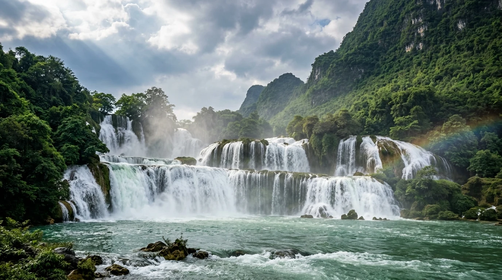
Tháng 6 – 8Mùa Nước Đổ & Thác Cuồn Cuộn
Thời điểm Thác Bản Giốc đạt lưu lượng dòng chảy mạnh nhất năm, nước sông Quây Sơn đổ bọt trắng xóa như sấm rền giữa đại ngàn xanh biếc, mang đến cảm giác choáng ngợp trước sức mạnh thiên nhiên kỳ vĩ.
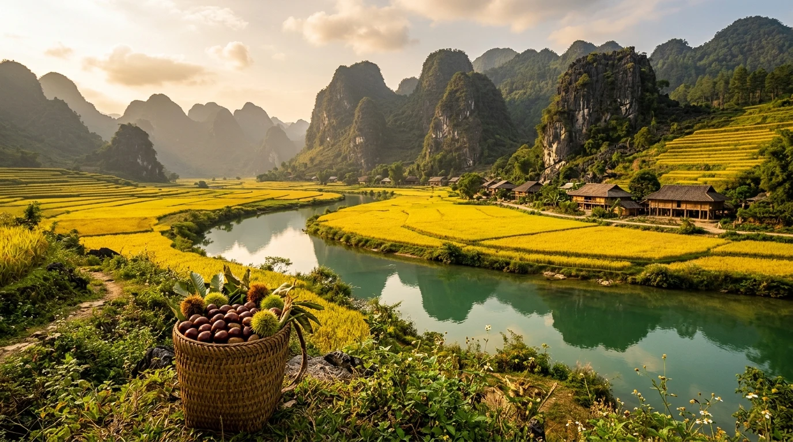
Tháng 9 – 10Mùa Vàng Trùng Khánh & Hạt Dẻ Chín
Những thung lũng lúa nếp ong hai bên bờ sông Quây Sơn chín vàng óng ả, dòng nước thác chuyển sang màu xanh ngọc bích trong veo và những cánh rừng hạt dẻ Trùng Khánh nứt vỏ rụng đầy mặt đất thơm lừng.
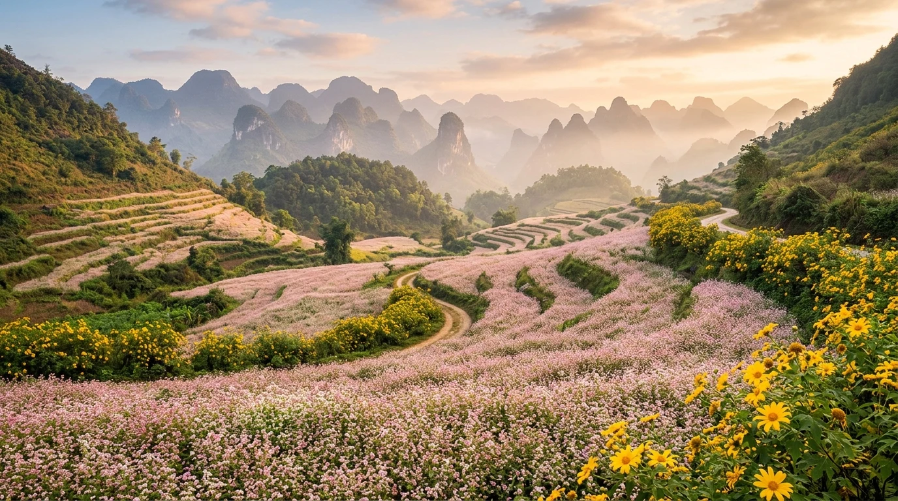
Tháng 11 – 12Mùa Hoa Tam Giác Mạch & Dã Quỳ
Sắc hồng phớt của những ruộng hoa tam giác mạch bản làng hòa quyện cùng sắc vàng rực của dã quỳ nở rộ khắp triền đèo Mã Phục. Khí trời se lạnh, sương mù bảng lảng giăng phủ đỉnh Phja Oắc mộng mơ.
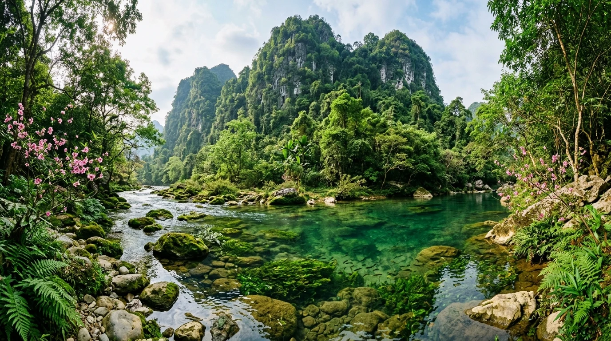
Tháng 1 – 3Mùa Xuân Ngọc Bích & Lễ Hội Cội Nguồn
Dòng suối Lê-nin và hồ Thang Hen trong vắt xanh biếc như dải lụa ngọc bích, tiếng đàn tính hát then rộn ràng trong các lễ hội truyền thống cầu mùa Nàng Hai và hội rèn Phúc Sen đầu năm mới.
📸 5. Top 8 Tọa Độ Thắng Cảnh Biểu Tượng & Dấu Tích Lịch Sử
(Nhấp vào từng hình ảnh để xem chi tiết ảnh chất lượng cao và câu chuyện truyền tích lịch sử chính thống)
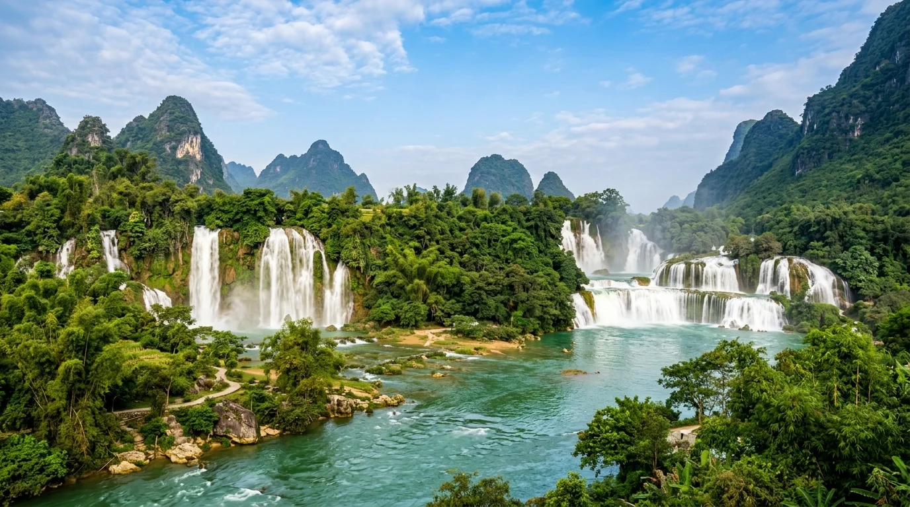
Thác Bản Giốc (Sông Quây Sơn)
Thác nước tự nhiên lớn nhất Đông Nam Á với 3 tầng nước đổ trắng xóa xuống dòng sông Quây Sơn màu ngọc bích kỳ ảo.
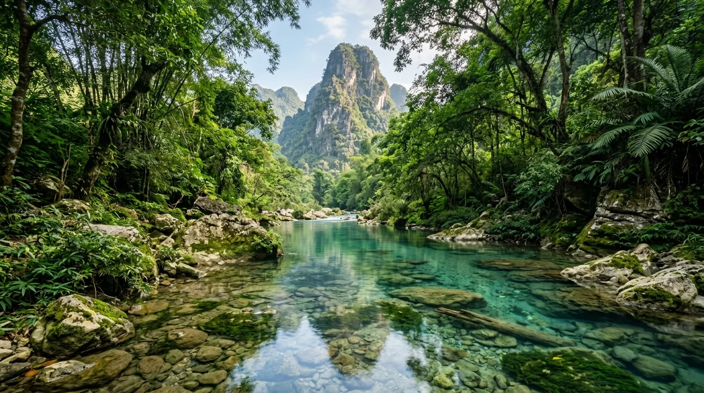
Suối Lê-nin & Núi Các Mác (Pác Bó)
Dòng suối nguồn trong veo màu ngọc bích nhìn thấu đáy rêu xanh dưới chân ngọn núi thiêng Các Mác lịch sử.
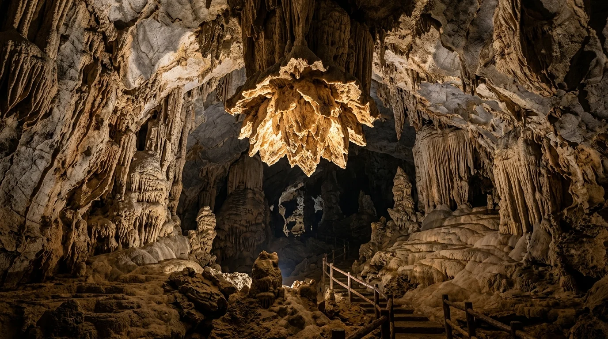
Động Ngườm Ngao (Đóa Sen Vàng)
Mê cung hang động karst 400 triệu năm tuổi lộng lẫy với tuyệt tác khối thạch nhũ hình hoa sen úp ngược màu hổ phách.
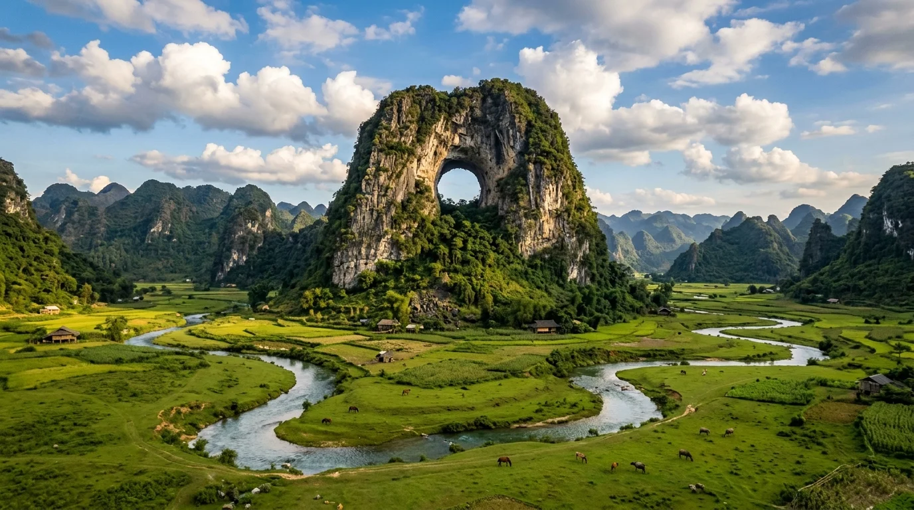
Núi Mắt Thần (Núi Thủng Phja Piót)
Vòm thủng khổng lồ tự nhiên xuyên qua lòng núi đá vôi đứng sừng sững giữa thung lũng thảo nguyên xanh mướt ngỡ như trời Âu.
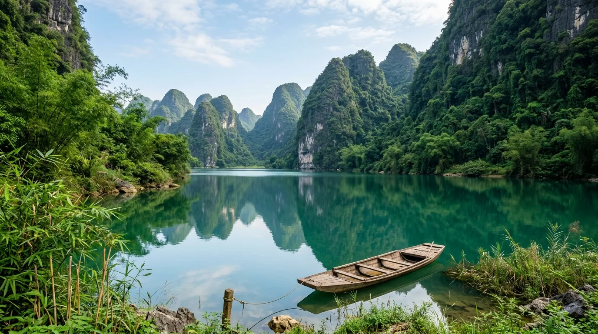
Quần thể Hồ Thang Hen
Hồ nước tự nhiên phẳng lặng tựa tấm gương ngọc bích khổng lồ soi bóng núi rừng nguyên sinh thanh bình.
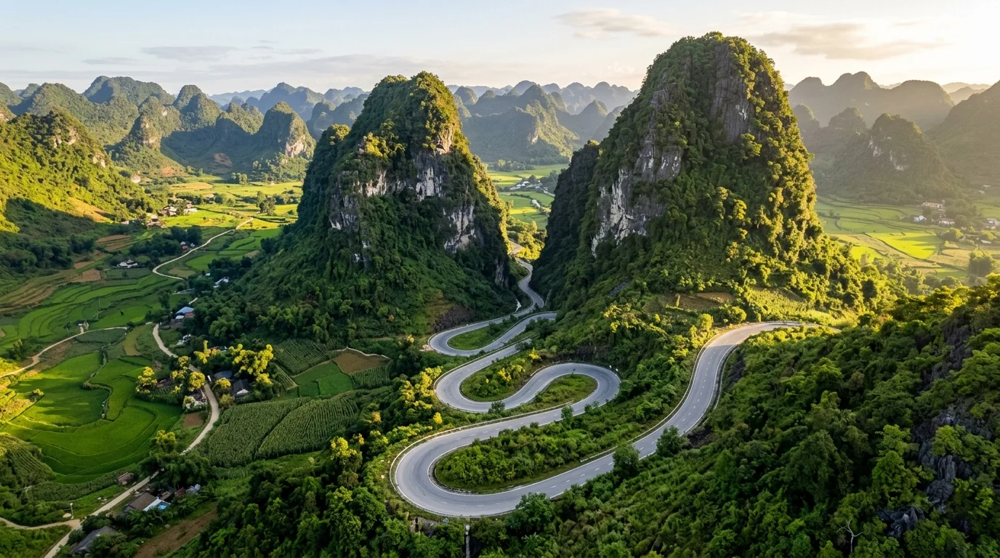
Đèo Mã Phục (Dấu tích Núi lửa cổ)
7 tầng dốc quanh co uốn lượn qua hai khối núi đá vôi uy nghi hình ngựa quỳ, di sản địa chất núi lửa ngầm đáy biển cổ đại.
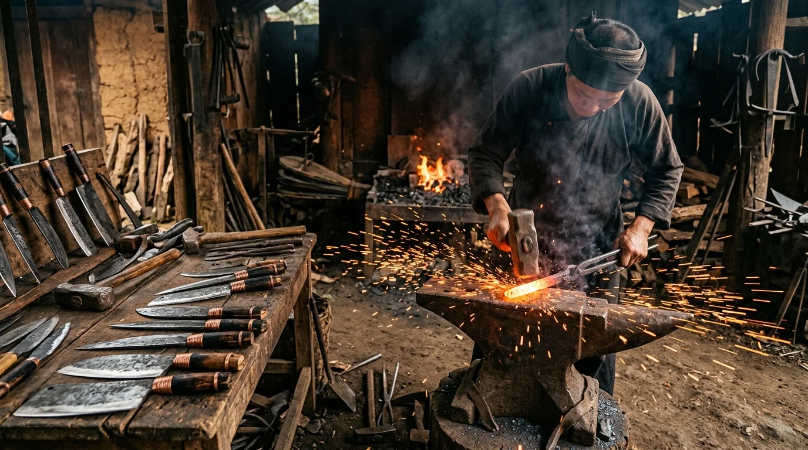
Làng rèn thủ công Phúc Sen
Làng nghề rèn dao thủ công nghìn năm tuổi của người Nùng An từ nhíp xe ô tô siêu bền bén ngọt.
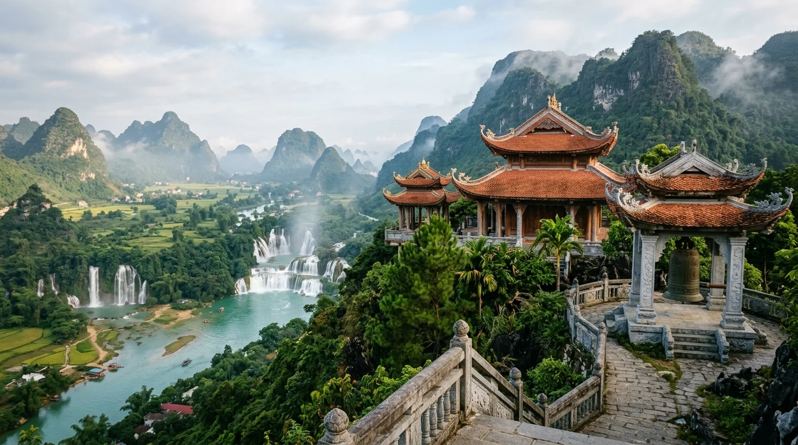
Chùa Trúc Lâm Bản Giốc
Cột mốc tâm linh thiêng liêng nơi biên cương, nơi ngắm trọn vẹn toàn cảnh dòng thác Bản Giốc từ trên cao.
🚗 6. Cẩm Nang Di Chuyển & Cung Đường QL3 Từ Hà Nội (~280km)
Nằm cách Thủ đô Hà Nội khoảng 280km về phía Bắc, cung đường lên Cao Bằng ngày nay đã được nâng cấp thuận tiện với nhiều sự lựa chọn phương tiện:
🛣️ Tuyến Đường Trọng Điểm Từ Hà Nội:
Lộ trình ô tô / Xe khách: Hà Nội → Cao tốc Hà Nội - Thái Nguyên (CT07) → Cao tốc Thái Nguyên - Chợ Mới (Bắc Kạn) → Quốc lộ 3 qua đèo Gió, đèo Giàng, thị trấn Ngân Sơn → Vượt đèo Cao Bắc vào địa phận tỉnh Cao Bằng. Thời gian di chuyển ô tô khoảng 5,5 đến 6,5 giờ.
Xe khách giường nằm & Limousine: Xuất phát liên tục từ các bến xe Mỹ Đình, Giáp Bát, Gia Lâm. Xe limousine đón trả tận nơi nội thành Hà Nội với giá từ 280.000 – 350.000 VNĐ / vé / lượt.
Di chuyển nội tỉnh: Thành phố Cao Bằng làm trung tâm, từ đây tỏa đi các tuyến: Tuyến phía Đông (Trùng Khánh - Thác Bản Giốc ~85km qua Đèo Mã Phục), Tuyến phía Bắc (Pác Bó ~52km đường trải nhựa êm thuận), Tuyến phía Tây (Nguyên Bình - Đỉnh Phia Oắc ~60km).
🍲 7. Tinh Hoa Ẩm Thực Vùng Cao Đông Bắc
Ẩm thực Cao Bằng mang đậm hương vị núi rừng hoang dã, hòa quyện giữa vị cay nồng của hạt dổi, hương thơm ngát của lá mắc mật và vị ngọt đậm đà của nguồn nước đầu nguồn:
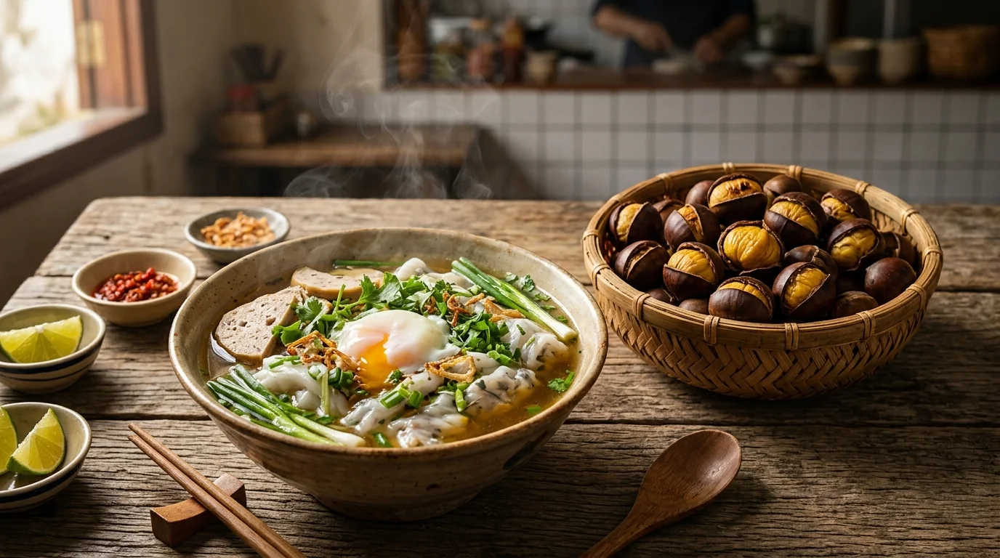
Đặc sản nức tiếngBánh Cuốn Canh Xương & Hạt Dẻ Trùng Khánh
Khác biệt hoàn toàn với bánh cuốn chấm nước mắm miền xuôi, bánh cuốn Cao Bằng tráng mỏng mềm mướt, cuộn thịt băm hoặc trứng lòng đào, chan ngập bát nước canh ninh xương ống heo ngọt lịm kèm giò nấm, măng ớt ngâm quả mác mật cay nồng. Cùng với đó là hạt dẻ Trùng Khánh nức tiếng nứt vỏ vàng óng bùi thơm béo ngậy.
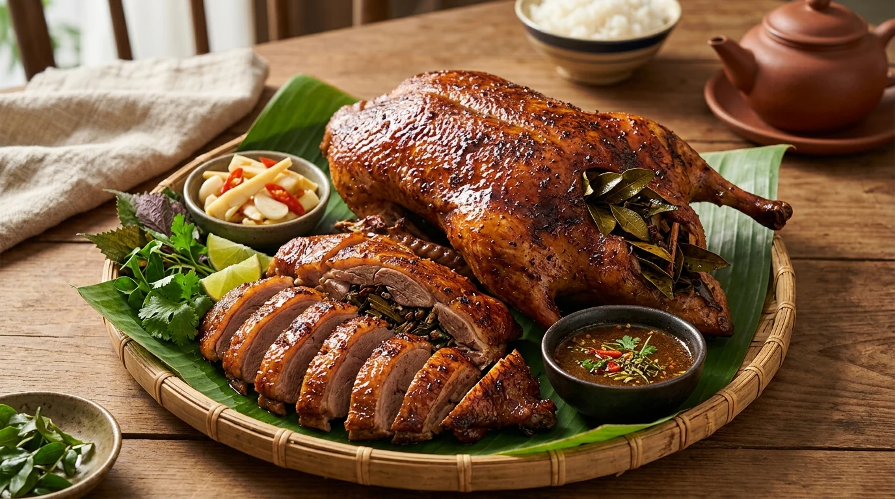
Đặc sản trứ danhVịt Quay 7 Vị Cao Bằng
Món ăn cung đình trứ danh làm từ giống vịt cỏ thả đồng chắc thịt. Vịt được tẩm ướp bằng 7 loại gia vị bí truyền của người Tày cùng lá mắc mật tươi, quét mật ong rừng lên da rồi nướng trên than hồng đỏ rực. Lớp da nâu vàng giòn rụm bóng bẩy, thịt bên trong ngọt mềm đậm đà thơm ngát hương rừng.
Bánh Áp Chao Giòn Rụm Mùa Đông
Thức quà vặt ấm lòng những chiều đông giá rét vùng cao. Vỏ bánh làm từ bột gạo nếp nương xay ướt pha đỗ tương giòn rụm, nhân bên trong là thịt vịt băm ướp gia vị đậm đà chao ngập trong chảo dầu sôi sùng sục. Bánh chấm nước mắm chua ngọt đu đủ xanh và rau thơm giòn tan khó cưỡng.
Lạp Xưởng Gác Bếp Hun Mía Đường
Đặc sản truyền thống ngày Tết của người Nùng. Thịt lợn đen vai nửa nạc nửa mỡ băm hạt lựu, ướp gừng núi, quả mắc mật và chút rượu trắng, nhồi lòng non rồi đem phơi nắng và gác bếp củi hun bã mía. Lạp xưởng chắc nịch, thơm mùi khói bếp ngọt dịu, thái lát mỏng chiên hoặc hấp ăn kèm xôi nếp dẻo thơm.
🎫 8. Bảng Giá Vé Tham Quan & Dịch Vụ Cao Bằng
Bảng giá vé niêm yết theo quy định của Ban Quản lý Khu du lịch và HĐND tỉnh Cao Bằng:
| Điểm tham quan / Trải nghiệm | Địa phương | Giá vé người lớn | Ghi chú / Trẻ em |
|---|---|---|---|
| Thác Bản Giốc | Trùng Khánh | 45.000 VNĐ | Trẻ em: 20.000 VNĐ. Đi bè mảng: 50.000 VNĐ/người |
| Động Ngườm Ngao | Trùng Khánh | 45.000 VNĐ | Tuyến nhánh bản địa: 195.000 VNĐ (có hướng dẫn viên & đèn pin) |
| Khu di tích Pác Bó | Hà Quảng | 25.000 VNĐ | Xe điện khứ hồi: 20.000 VNĐ / lượt |
| Khu du lịch Hồ Thang Hen | Quảng Hòa | 30.000 VNĐ | Thuê thuyền ngắm cảnh: 100.000 VNĐ / thuyền |
| Núi Mắt Thần (Phja Piót) | Quốc Toản | Miễn phí 100% | Điểm danh thắng tự nhiên, tự do cắm trại |
| Chùa Trúc Lâm Bản Giốc | Đàm Thủy | Miễn phí 100% | Điểm tâm linh văn hóa mở cửa tự do |
| Làng rèn Phúc Sen | Quảng Hòa | Miễn phí 100% | Làng nghề truyền thống mở cửa tham quan tự do |
⚠️ Lưu ý: Bảng giá vé trên được tổng hợp theo biểu mức niêm yết chính thức. Giá thuê bè mảng hoặc xe điện có thể thay đổi tùy thuộc vào mùa cao điểm hoặc quy định của đơn vị quản lý.
🧭 9. Gợi Ý Lịch Trình Khám Phá Cao Bằng (3 Ngày 2 Đêm)
📅 Lịch trình 3 Ngày 2 Đêm (Trọn vẹn Kỳ quan Non nước Đông Bắc)
Ngày 1: Hà Nội → TP. Cao Bằng → Cội nguồn Pác Bó: Sáng sớm xuất phát từ Hà Nội theo cao tốc Thái Nguyên - Chợ Mới và QL3. Trưa đến TP. Cao Bằng nhận phòng và thưởng thức bánh cuốn canh xương. Chiều di chuyển lên Pác Bó viếng đền thờ Bác Hồ, dạo bước bên dòng suối Lê-nin ngọc bích, chụp ảnh Núi Các Mác và bàn đá lịch sử. Tối trở lại thành phố thưởng thức vịt quay 7 vị.
Ngày 2: TP. Cao Bằng → Đèo Mã Phục → Thác Bản Giốc → Động Ngườm Ngao: Sáng vượt đèo Mã Phục huyền thoại ghé thăm làng rèn Phúc Sen. Trưa đến Trùng Khánh ngắm dòng thác Bản Giốc hùng vĩ nhất Đông Nam Á, đi bè mảng sát chân thác đón bọt nước tung trắng xóa. Đầu giờ chiều chiêm ngưỡng Đóa sen úp ngược trong lòng Động Ngườm Ngao kỳ ảo và vãn cảnh Chùa Phật Tích Trúc Lâm. Chiều muộn ghé check-in Núi Mắt Thần cắm trại săn hoàng hôn.
Ngày 3: Hồ Thang Hen → Mua sắm đặc sản → Hà Nội: Sáng thư thái tản bộ ngắm mặt hồ Thang Hen trong xanh như gương ngọc bích soi bóng rừng núi đá vôi. Trưa mua sắm hạt dẻ Trùng Khánh, lạp xưởng gác bếp, thạch đen Thạch An làm quà rồi khởi hành theo QL3 về lại Hà Nội, kết thúc chuyến du hành kỳ thú.